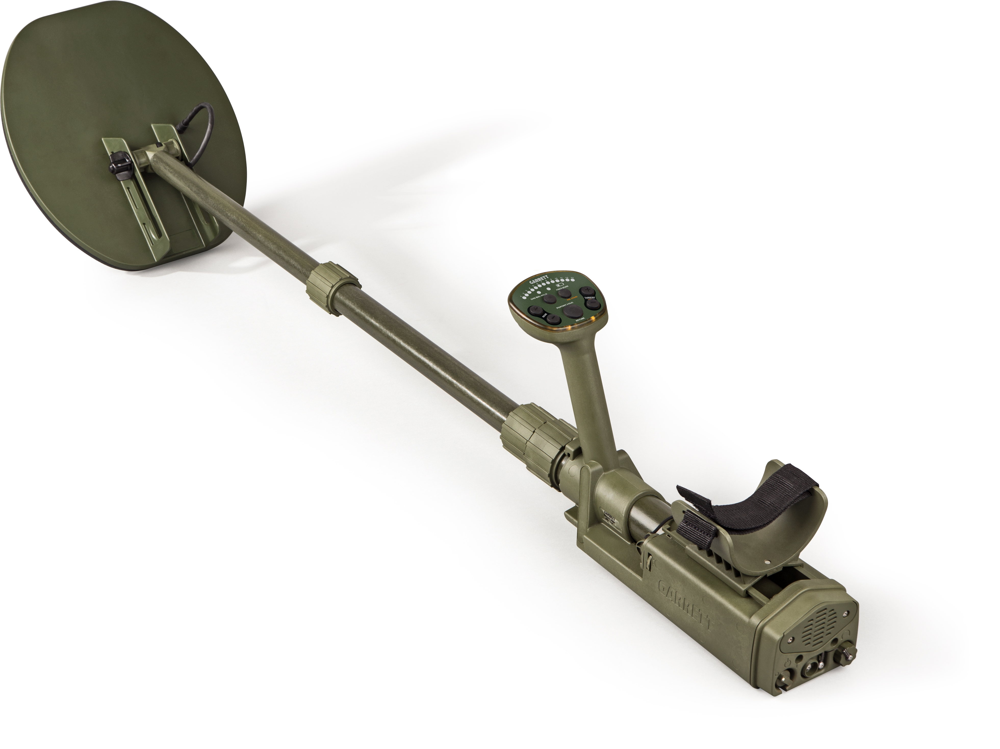
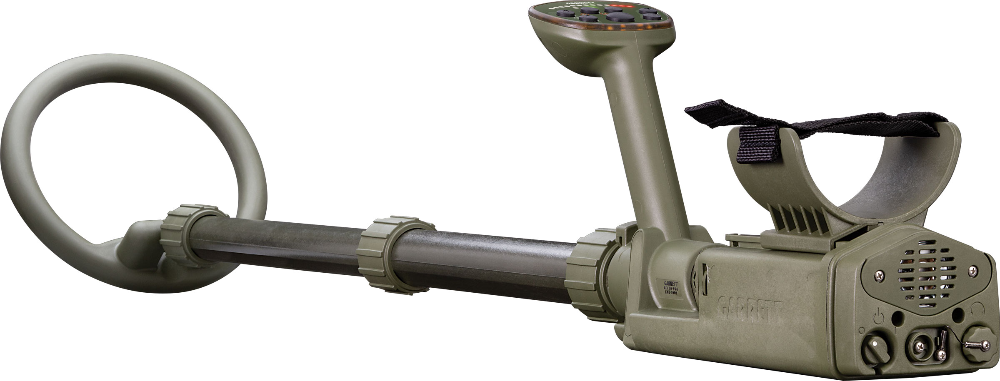
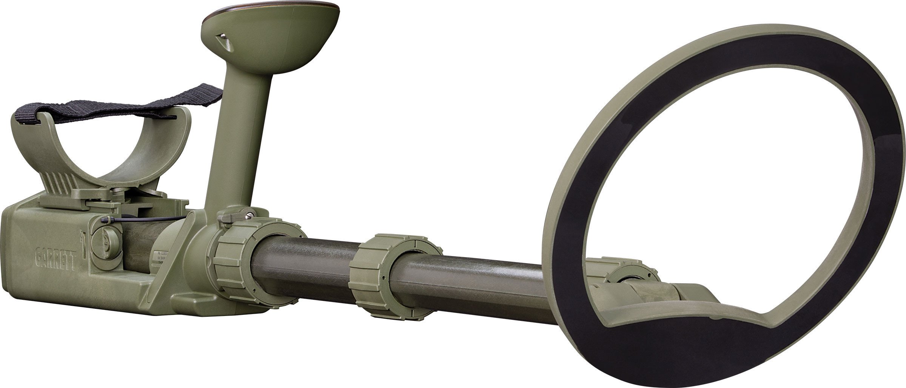
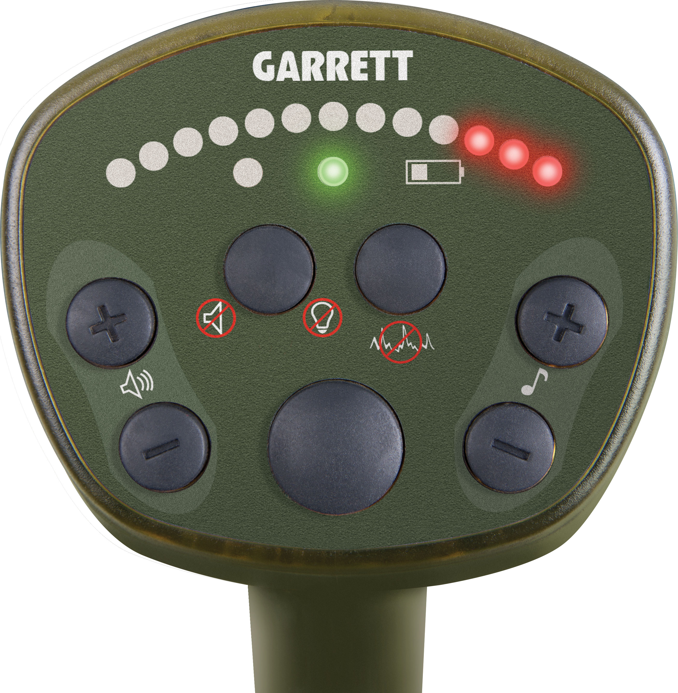
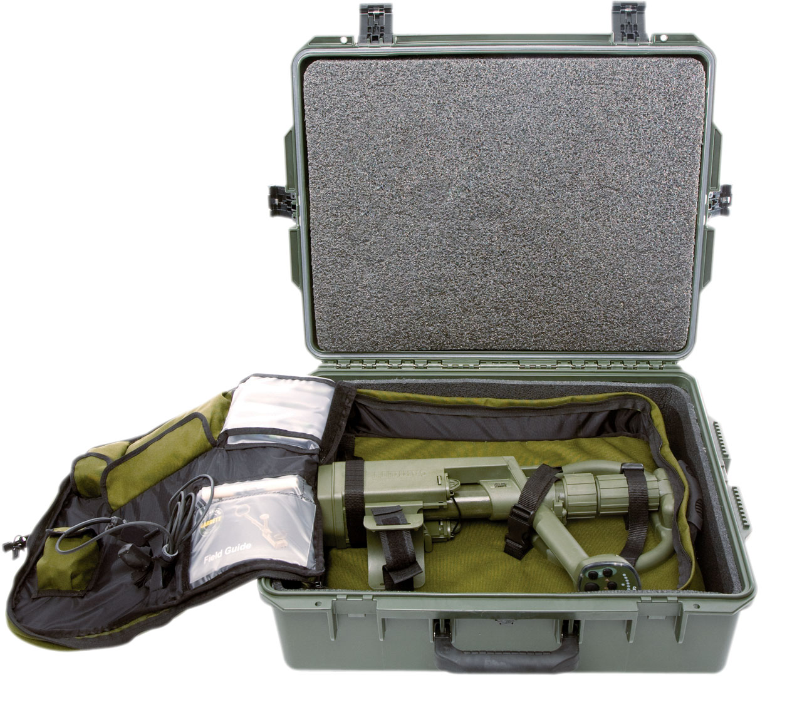

Ampliar







Temporariamente Indisponível
Uso Militar
Contraminas
Recon Pro
CONTRAMINA Series
Detectores especializados para operações de contraminas, desminagem humanitária e localização de artefatos explosivos não detonados (UXO). Disponíveis nos modelos AML-750 e AML-1000.
Frequência: 6,8 kHz — otimizada para detecção de minas
Bobina: DD para máxima estabilidade em solo mineralizado
Ground Balance: Manual — controle preciso em campo
Modelos: AML-750 (leve) · AML-1000 (avançado)
Bateria: 8x AA — operação prolongada em campo
Produto Temporariamente Indisponível
Cadastre-se para ser notificado quando o produto estiver disponível